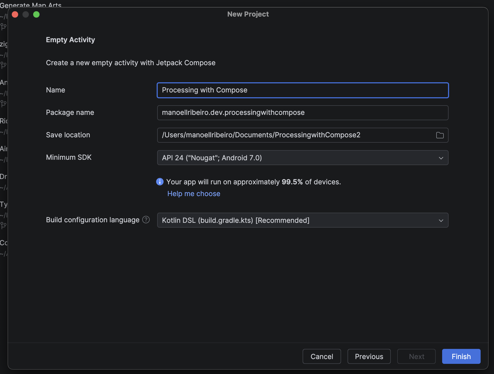
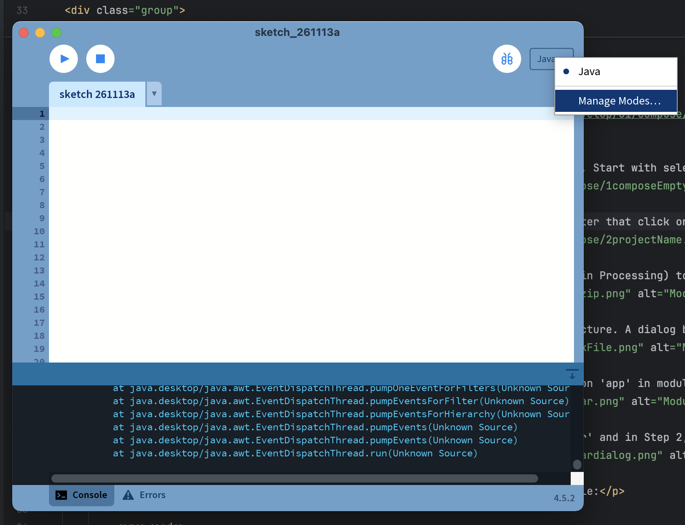
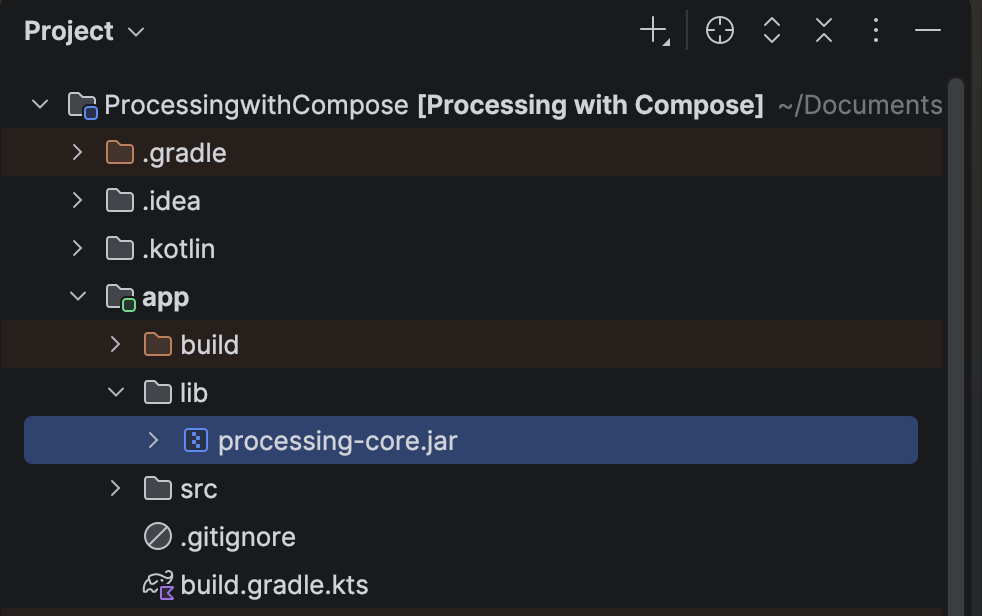
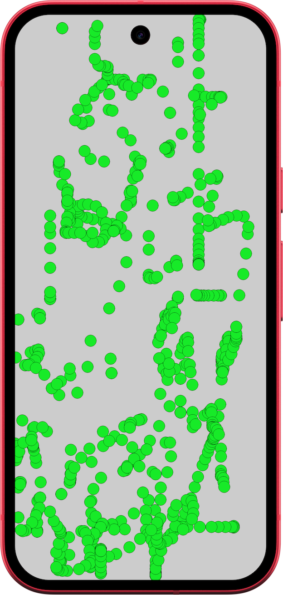

Processing con Jetpack Compose
Cómo configurar un proyecto moderno de Android y ejecutar un bosquejo de Processing dentro de una vista de Android con Jetpack Compose.
Introducción
Todos sabemos que desde 2026 Android se ha vuelto Compose-first, así que si quieres empezar una nueva aplicación de Android se recomienda construir el 100% de tu interfaz usando Jetpack Compose. Si dentro de esta aplicación planeas usar un bosquejo de Processing, este tutorial es para ti.
1. Crea un proyecto de Android si aún no lo has creado. Comienza seleccionando una Compose Empty Activity:

2. Ingresa el nombre del proyecto, el nombre del paquete y la versión mínima del SDK. Después haz clic en el botón 'Finish':

3. Ahora necesitamos obtener la biblioteca principal de Processing que vamos a usar dentro de nuestra app. Este paso se realiza fuera de Android Studio y primero necesitarás descargar el Processing launcher.

4. Haz clic en el botón 'New Sketch' y después ve al menú 'Manage Modes':

5. Selecciona 'Android Mode for Processing 4' y haz clic en 'Install':

6. Después de la instalación, dentro de tu carpeta de Processing vas a encontrar el archivo 'processing-core.zip' (el mío estaba en Documents/Processing/modes/AndroidMode). Necesitas renombrarlo a processing-core.jar y moverlo a la carpeta app/lib dentro del proyecto de Android que creaste antes:

7. Ahora, dentro del archivo 'build.gradle.kts' a nivel de app de tu proyecto, agrega la siguiente implementación dentro de dependencies:
dependencies {
...
implementation(files("lib/processing-core.jar"))
...
}
8. Crea un nuevo archivo llamado MyKotlinSketch y escribe tu bosquejo usando Kotlin; todo funcionará bien gracias a la interoperabilidad con Java. Pero si tienes un bosquejo en Java y solo quieres copiarlo y pegarlo, no hay problema, también funcionará bien:
// MyKotlinSketch.kt
import processing.core.PApplet
class MyKotlinSketch: PApplet() {
override fun settings() {
fullScreen()
}
override fun setup() {}
override fun draw() {
if (mousePressed) {
fill(23F, 234F, 40F)
ellipse(mouseX.toFloat(), mouseY.toFloat(), 50f, 50f)
}
}
}
9.a Nuestro bosquejo necesita un fragment dentro del cual ejecutarse, así que el siguiente paso es agregar la dependencia fragment-compose a nuestro proyecto. Primero, necesitas agregar las siguientes líneas a tu 'libs.versions.toml':
// libs.versions.toml
[versions]
fragmentVersion = "1.9.1" //usa la versión del enlace.
[libraries]
androidx-compose-fragment = { group = "androidx.fragment", name = "fragment-compose", version.ref = "fragmentVersion" }
9.b Después agrega esta línea a tu app/build.gradle.kts:
// app/build.gradle.kts
dependencies {
...
implementation(libs.androidx.compose.fragment)
...
}
10. Crea un archivo llamado MyProcessingFragment; será el fragment que extenderá PFragment de la biblioteca de Processing. Este recibe un bosquejo de Processing en el constructor, así que le pasaremos una instancia de nuestro MyKotlinSketch. De esta forma el fragment funcionará como el contenedor de nuestro bosquejo:
// MyProcessingFragment.kt
import processing.android.PFragment
class MyProcessingFragment : PFragment(MyKotlinSketch())
11. Finalmente, el código de nuestra 'MainActivity' debería quedar de la siguiente manera:
class MainActivity : FragmentActivity() {
override fun onCreate(savedInstanceState: Bundle?) {
super.onCreate(savedInstanceState)
enableEdgeToEdge()
setContent {
ProcessingWithComposeTheme {
AndroidFragment<MyProcessingFragment>(
modifier = Modifier
.fillMaxSize()
.systemGestureExclusion()
)
}
}
}
}
Esto te dará un bosquejo de Processing ejecutándose en pantalla completa en una aplicación de Android construida con Jetpack Compose, como se muestra a continuación:

Algunos puntos importantes sobre esta implementación:
- FragmentActivity: Es necesaria para usar el composable AndroidFragment.
- .systemGestureExclusion(): Con esto evitamos que se activen gestos del sistema al dibujar en la pantalla.
fullScreen() en el bloque settings de MyKotlinSketch: Permite que nuestro bosquejo ocupe todo el espacio disponible de su contenedor padre. Por ejemplo, si usáramos .padding(50.dp) junto con .fillMaxSize() (o incluso un tamaño fijo), obtendríamos un resultado como este:

El proyecto usado para escribir este tutorial está disponible aquí.